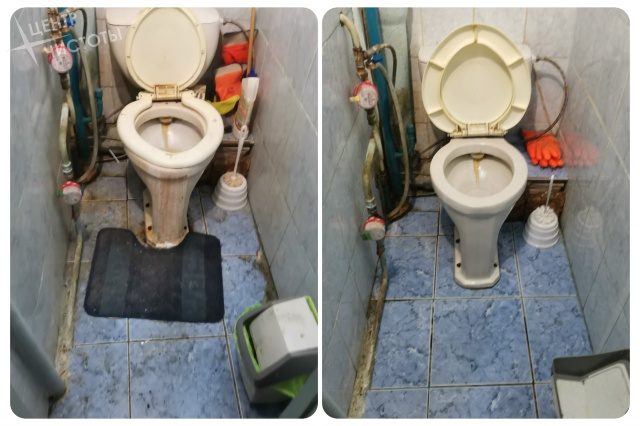
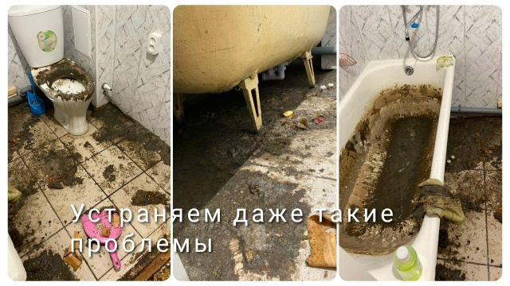
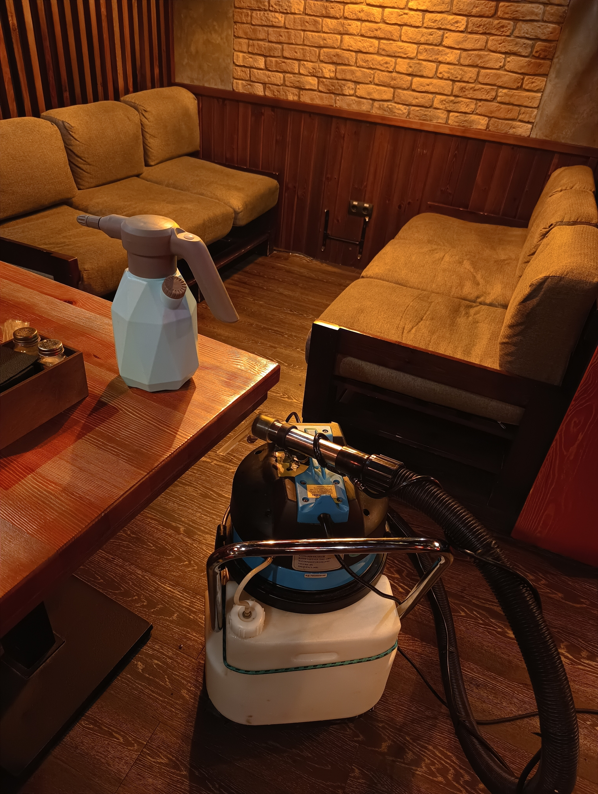

Как правильно убирать квартиру?
Советы профессионалов по уборке дома.
Идеальная чистота в каждом районе: ГГМ, Вагонка, Выя, Центр, Красный Камень
Дмитрий | +7 (950) 642-22-92
🏠✨ Клининговая компания в Нижнем Тагиле: идеальная чистота в каждом районе!
Ищете надежную уборку квартир в Нижнем Тагиле? Мы берем на себя заботы о вашем доме на ГГМ, Вагонке, Вые, Красном Камне или в Центре. Наш клининг — это профессиональный подход и безупречный результат. 🧼🧹
| Услуга | Цена (₽) |
|---|---|
| Генеральная уборка 1-комнатной | 8 000 |
| Генеральная уборка 2-комнатной | 10 000 |
| Генеральная уборка 3-комнатной | 12 000 |
| Генеральная уборка 4-комнатной | 14 000 |
| Уборка после ремонта (1-к.) | от 10 000 |
| Уборка после ремонта (2-к.) | от 12 000 |
| Мойка окон (стандартная квартира) | от 3 000 |
| Поддерживающая уборка | от 4 000 |
| Уборка офисов | от 5 000 |

Чистка сантехники от налёта и ржавчины

Уборка после затопления

Уборка в кафе